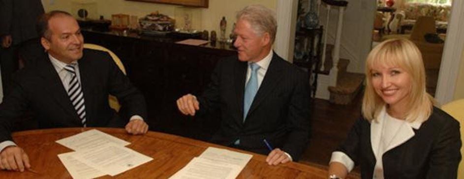
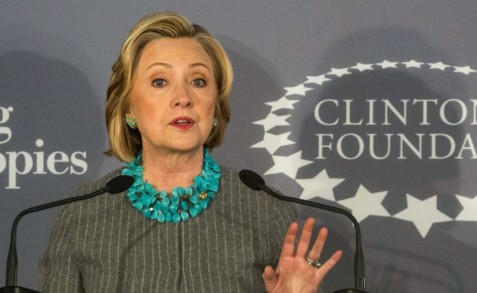
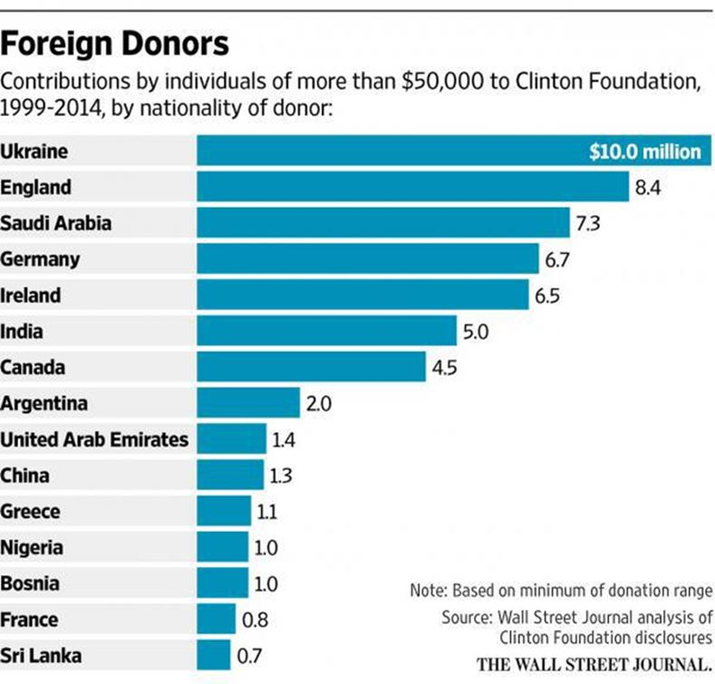
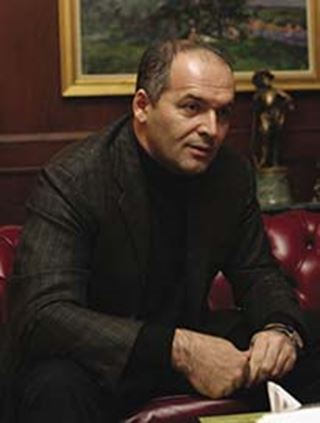
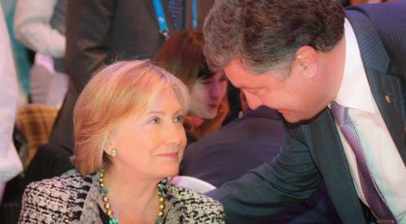
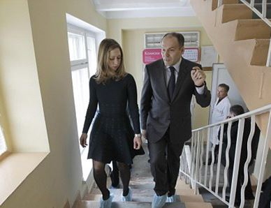
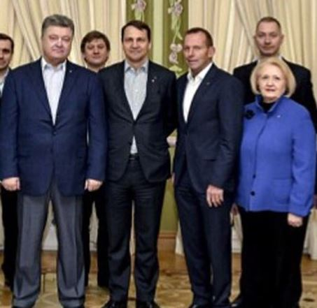
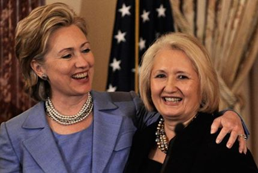
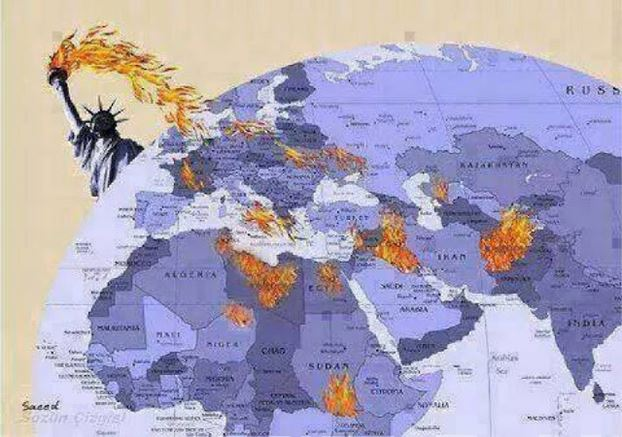
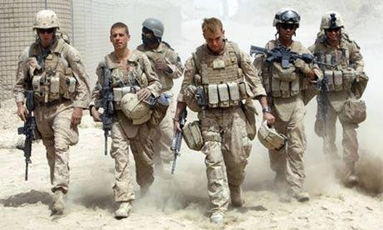

A quelques jours du scrutin présidentielle, la candidate Clinton récolte en tempête le vent qu'elle a semé à travers le Monde ces dernières années, et si même paraît-il il ne faut pas tirer sur une ambulance, il est intéressant de rappeler ici quelques éléments liant l'oligarchie ukrainienne à la ploutocratie étasunienne dont les Clinton sont un rouage important.
Ce n'est plus un secret pour personne que le renversement du Président ukrainien élu Ianoukovitch en février 2014 a été organisé par le Département d'état étasunien. Cette ingérence subversive américaine pour une préemption de l'Ukraine, ce "pivot stratégique européen" vital pour réussir à encercler la Russie (la stratégie du « contaitment » de la Russie définie depuis le XIXème siècle par MacKinder, puis Kennan et Brzeziński), s'est exercée depuis les années 90 à travers des aides diverses données à l'opposition politique pro occidental.
Victoria Nuland qui est secrétaire d'état de la Maison Blanche en charge des affaires européennes et eurasiennes au moment du Maïdan admettra le 16 décembre 2013, lors d’une conférence donnée à Washington à la Fondation Amérique-Ukraine (sponsorisée par les pétroliers Chevron et Exon…), : « Depuis l’indépendance de l’Ukraine en 1991, les États-Unis ont soutenu les Ukrainiens afin qu’ils développent des compétences et des institutions démocratiques, afin qu’ils promeuvent la participation citoyenne et la bonne gouvernance, qui sont des conditions préalables pour que l’Ukraine puisse réaliser ses aspirations européennes.
Nous avons ainsi investi plus de 5 milliards de dollars pour aider l’Ukraine à atteindre ces objectifs – et d’autres – qui assureront à l’Ukraine sécurité, prospérité et démocratie. »
Sur la Place du Maïdan, il y aura d'abord en 2004 la « révolution orange » mais qui ne réussira pas à faire basculer l'Ukraine vers l'Union Européenne puis 10 ans plus tard la « Révolution de la dignité » (fallait oser !) au cours de laquelle nous assisterons à un véritable défilé de soutien des ténors du Nouvel Ordre Mondial, du Vice-Président étasunien Biden à l'incendiaire français Bernard Henry Levy, en passant par Ashton, Nuland, Mac Cain, Fabius, Bildt, Merkel etc... tandis que dans les coulisses du Maïdan, les services secrets et les "contractors" des officines privées aux ordres de la CIA organisent les émeutes.
Même le Président Obama reconnaîtra en janvier 2015 dans une interview accordée à « CNN » que les USA avaient réussi à « faire transférer le pouvoir » en Ukraine. Quant à George Friedman, le politologue américain et fondateur de l'agence d'analyse et de renseignement « Stratfor » qui est considérée par les experts comme une « ombre de la CIA », il déclare dans une interview en décembre 2015 à « Kommersant », que le Maïdan n'était qu'une « mise en scène destinée à préparer « le coup d'état le plus flagrant de l'Histoire ».

Victor Pinchuk et son épouse Elena Franchuk signent un accord de coopération de 2,5 millions $ avec le 42ème Président des États-Unis, Bill Clinton
Les USA pour préparer le terrain et organiser de l'intérieur leur stratégie de préemption des pays « non alignés » s'appuient des « ONG » qui sous couvert d'actions culturelles, caritatives ou humanitaires vont organiser des réseaux dissidents, former et financer les forces d'opposition politiques pro-occidentales. Ces ONG qui sont pilotées par les mentors du mondialisme, comme par exemple le milliardaire Georges Soros, s'appellent « Résistance » (OTPOR), « Fondation Nationale pour la Démocratie » (NED), « Fondation Mac Arthur », « Institut Démocratique National » etc... dont les connexions avec la CIA et les actions subversives sont révélées notamment dans l'histoire des « révolutions de couleurs » est-européennes et des « printemps arabes » récents.
Parmi ces ONG étasuniennes importantes figure la « Fondation Clinton » une ONG « à but humanitaire, philanthropique et écologique » créée en 1997 par le 42ème Président des USA et mari de la candidate Hillary, Bill Clinton. Cette « ONG » est officiellement financée par 200 000 donateurs provenant essentiellement de contributeurs étrangers, notamment de la famille royale saoudienne, du roi du Maroc et de plusieurs monarchies pétrolières du Moyen-Orient, dont les sulfureux Qatar qui avec les saoudiens financent également le terrorisme islamiste international.
Or dans le peloton de tête des principaux donateurs de la « Fondation Clinton », on peut observer que la pôle position est détenue par.... l'Ukraine avec 10 millions de dollars !
L'un des principaux donateurs ukrainiens de la Fondation Clinton est l'oligarque Victor Pinchuk, ancien membre du Parlement ukrainien et partisan d'une néolibéralisation de Ukraine. Pinchuk fait partie de ces privilégiés devenus riches lors de la privatisation chaotique des grandes entreprises ukrainiennes après l'effondrement de l'URSS et l'indépendance du pays. Il sera pendant l'hiver 2013-2014 un fervent partisan du Maïdan.
Il faut noter que les versements de la « Fondation Pinchuk » à la « Fondation Clinton » étaient initialement prévus d'un montant de 29 millions de dollars sur une durée de 5 ans. La crise financière de 2008 a imposé de revoir ensuite à la baisse de programme de financement.
Il y a donc de toute évidence des liens privilégiés entre le clan Clinton et l'Ukraine, que les révélations récentes des Wikileaks de Julian Assange viennent de confirmer dans la tempête médiatique qui entoure la course à la Maison Blanche menée par Hillary Clinton, l'épouse du Président Bill Clinton, mais surtout la secrétaire d'Etat du gouvernement Obama de 2009 à 2013...
Et nous allons voir que les relations entre les ukrainiens pro-maïdan et les Clinton relèvent surtout d'un partenariat stratégique néolibéral se cachant derrière une œuvre de charité philanthropique...
Envois et renvois d'ascenseurs par-dessus l'Atlantique
Tout d'abord, les dons réalisés par Pinchuk, demandent en contrepartie qu'un programme de formation de cadres politiques soit mis en œuvre par la Fondation Clinton, et c'est la « Clinton Global Initiative » sa branche qui coordonne les actions de bienfaisance qui va se charger de la formation dont de nombreux « élèves » sont aujourd'hui membres du parlement ukrainien post maïdan...
La fondation Pinchuk par qui transite les fonds a déclaré que ses dons étaient destinés « à aider à faire de l' Ukraine un pays libre et moderne fondé sur des valeurs européennes ».
 M. Pinchuk, un ancien membre du Parlement de l'Ukraine, visite un hôpital de Kiev avec Chelsea Clinton en 2012. PHOTO : EFREM LUKATSKY / PRESS POOLMais le retour d'ascenseur se fait également dans les deux sens et aux Etats Unis, Hillary Clinton va obtenir à son tour le soutien des ukrainiens néolibéraux... Ainsi par exemple en 1996, à l'occasion du dixième anniversaire de la catastrophe de Tchernobyl, Hillary Clinton décide de lancer un programme d'aide aux enfants victimes des radiations.
L'action de Clinton pour ce « Fonds de secours aux enfants de Tchernobyl », tout louable soit-elle a été fortement médiatisée en 1999, notamment par l'attribution d'une récompense, le « Lifetime Achievement Award humanitaire ».
Or dans l'année qui suit cette action humanitaire, Hillary a été élue sénateur de New York ou se trouve une importante diaspora ukrainienne d'environ 30 000 personnes, et peu après, Hillary Clinton ne manquera pas de remercier cette communauté en promettant de demander la qualification de génocide pour l'Holodomor, d'appuyer la candidature de l'Ukraine à l'Organisation Mondiale du Commerce et de préparer le terrain législatif pour son intégration future dans... l'OTAN !
L'oligarque Pinchuk lui aussi a son réseau aux USA dans cette communauté américano-ukrainienne comme par exemple Natalie Jaresko qui après avoir travaillé pour le Département d'Etat américain est devenue... Ministre des finances de l'Ukraine de décembre 2014 à avril 2016, au sein du gouvernement Iatseniouk.
L'arme secrète d'Hillary
 Ci-dessus : Porochenko (à gauche) en compagnie de "ses conseillers internationaux" le polonais, Radoslaw Sikorski; l'australien Tony Abbott; et Melanne Verveer, la protégée ukrainienne-américaine de Hillary ClintonLes liens que tisse l'Ukraine avec les Clinton ne s’arrêtent pas à la personne d'Hillary mais se font également au sein de ses proches collaborateurs comme par exemple avec Melanne Verveer qui a été la chef de cabinet de l'ex-Première dame Hillary Clinton à la Maison-Blanche. Or cette néoconservatrice que certains appellent « l'arme secrète d'Hillary » et qui est aujourd'hui ambassadrice itinérante de l'administration Obama auprès des femmes dans le Monde a des liens avec l'Ukraine très importants : petite fille d'immigrés ukrainiens, elle entretient des liens affectifs avec le pays de ses ancêtres notamment en fréquentant l'école puis le lycée ukrainiens d'Anthracite puis effectue en tant que chef de cabinet de Hillary plusieurs voyages en Ukraine...
Mais dans la pure tradition subversive étasunienne, Melanne Verveer est aussi la co-fondatrice et Présidente de l'ONG « Vital Voices Global Partnership », qui développe des actions multiples en Ukraine, comme par exemple ce sommet international de l'organisation réalisé en octobre 2007 dans le centre « Vital Voices de l'Eurasie » installé à Kiev.
Au cours de ce sommet de 4 jours « soutenu par le Département d'Etat américain », interviennent Kateryna Iouchtchenko l'américaine d'origine ukrainienne et femme du Président Victor Iouchtchenko, le ministre des Affaires étrangères, un certain ... Arseniy Iatseniouk, (futur 1er ministre post Maïdan) ainsi que Hillary Clinton bien sûr, qui par vidéo conférence déclare : « Sans la participation pleine et égale des femmes, la démocratie ne peut pas prospérer, les économies de marché ne peuvent pas croître, et les nations ne peuvent pas avancer... »
Un soutien à l'Ukraine exacerbé par une Russophobie délirante
Même si elle a quitté officiellement le gouvernement américain au moment des événements du Maïdan, Hillary Clinton continue a avoir la main dans les dossiers relatifs à l'Ukraine, ne serait-ce que par l'intermédiaire de Victoria Nuland, la nouvelle secrétaire d'état étasunienne pour l'Europe et la Russie qui est un des architectes occidentaux du Maïdan et qui a été auparavant Directrice adjointe pour les anciennes affaires de l'Union soviétique sous l'administration de... Bill Clinton, avant d'être conseiller adjoint de la sécurité nationale du vice-président Cheney (administration Bush).
Le discours des Clinton concernant l'Ukraine rejoint donc celui de la communauté ukrainienne russophobe, que ce soit celle exilée aux USA, au Canada ou celle de la région de Lvov dans l'Ouest de l'Ukraine qui va fournir le gros des manifestants du Maïdan. Cette russophobie ukrainienne héritière d'un antibolchévisme passé déteint dans les discours de la candidate à la Présidence étasunienne, qui ne semble pas craindre le ridicule et se lance dans des caricatures plus hystériques qu'historiques !
Le 20 septembre 2016, à l'occasion d'une Assemblée Générale de l'ONU, « Killary » Clinton a rencontré le Président Porochenko à New York, et lui a promis qu'en cas de victoire présidentielle les Etats Unis soutiendraient encore plus l'Ukraine. Les promesses de la candidate Clinton au Président Porochenko ont porté principalement sur « la défense des frontières de l'Ukraine contre l'agression russe » c'est à dire à l'augmentation des aides militaires à l'armée ukrainienne et principalement la livraison d'armes que le Président Obama a toujours « officiellement » hésité à accorder…
Du côté de l'Ukraine, nombreux sont ceux qui espèrent l'élection de « Killary » autant parce qu'ils redoutent un rapprochement entre Vladimir Poutine et un Donald Trump décidé à éteindre le feu de cette nouvelle guerre froide, que par rapport à une escalade militaire dans le Donbass qui parait accessible en cas de victoire de l'incendiaire Clinton.
En effet, l'équipe que présenterait la candidate démocrate en cas de victoire risque de faire passer celle d'Obama pour des "modérés" et Clinton risque de remplacer l'actuel ministre étasunien des Affaires Etrangères John Kerry, qui quoiqu'on en dise contre son homologue russe Lavrov, privilégie toujours le dialogue à la confrontation, par un faucon de guerre du type d'Ashton ou de Carter par exemple qui fantasment d'en découdre avec Moscou.
Actuellement Kiev, qui craint comme la peste une victoire de Trump, fait tout pour saboter les accords de Minsk en chargeant le sac déjà trop lourd de nouvelles exigences inacceptables comme le déploiement d'une mission armée de l'OSCE de 20 000 hommes ou la restitution de la ville de Debaltsevo entre Donetsk et Lugansk. Le nouveau Président élu le 8 novembre ne prenant ses fonctions qu'en janvier il est fort probable que le front du Donbass explose rapidement en cas de victoire de Trump, afin d'accélérer par la guerre les objectifs des néo-conservateurs étasuniens en Ukraine. En cas de Victoire de Clinton, les ukrainiens pourront alors continuer plus ouvertement la militarisation de l'Ukraine et les provocations jusqu'à ce que l'inévitable guerre avec la Russie intervienne naturellement dans une escalade autorisée et même soutenue par Washington.
Hillary Clinton Clinton a toujours montré un enclin pour l'option militaire frisant la fascination pour la guerre partagée avec son amie Madeleine Albright, l’agressive ministre des Affaires étrangères qui justifiait la mort de 500 000 enfants pour le renversement de Sadam Hussein.
Diana Johnstone explique cette frénésie militariste ainsi : « Dans mon livre, "La Reine du Chaos", je souligne l’alliance perverse entre le complexe militaro-industriel américain et certaines femmes ambitieuses qui veulent montrer qu’elles peuvent faire tout ce que font les hommes, notamment la guerre. Un intérêt mutuel a réuni les militaristes qui veulent la guerre et des femmes qui veulent briser les plafonds de verre. Si les militaristes ont besoin de femmes pour rendre la guerre attrayante, certaines femmes très ambitieuses ont besoin de la guerre pour faire avancer leur carrière. Les personnalités les plus visiblement agressives et va-t’en guerre de l’administration Obama sont d’ailleurs des femmes : Hillary, Susan Rice, Samantha Power, Victoria Nuland… »
Hillary par exemple a poussé son mari à bombarder la Yougoslavie en 1999 et plus tard, pendant qu'elle était en fonction en tant que secrétaire d'état, Hillary Clinton a soutenu et participé à six interventions majeures des USA dans des pays étrangers : le Honduras, Haïti, l' Afghanistan, la Libye, la Syrie et l'Ukraine.
Lorsque l'on voit les conséquences de cette politique étrangère étasunienne pour les peuples concernés on est en droit d'espérer sa défaite devant Trump, l'extravagant candidat républicain, car cette incendiaire veut tenter d'éviter l'effondrement systémique du système mondialiste par un chaos généralisé et une guerre contre la Russie qui serait une catastrophe pour l'Europe et le Monde entier.
E.C.
Sources de l'article :
- Les crises.fr : Euromaïdan : le rôle des américains et des européens
- The ukrainian weekly : Hillary Clibton, l'Ukraine et d'autres choses...
- Mintpress news : Wikileaks La Fondation Clinton et l'Ukraine
- Investigactions :
1Les chiffres donnés ci-après ne font pas état des 28 millions de dollars qu’aurait perçu la Fondation Clinton de la part du roi du Maroc Mohammed VI en échange de «faveurs» diplomatiques et économiques, selon le site Daily Caller.
2Un quartier s’appelle d’ailleurs « Little Ukraine ».

Partager cette page